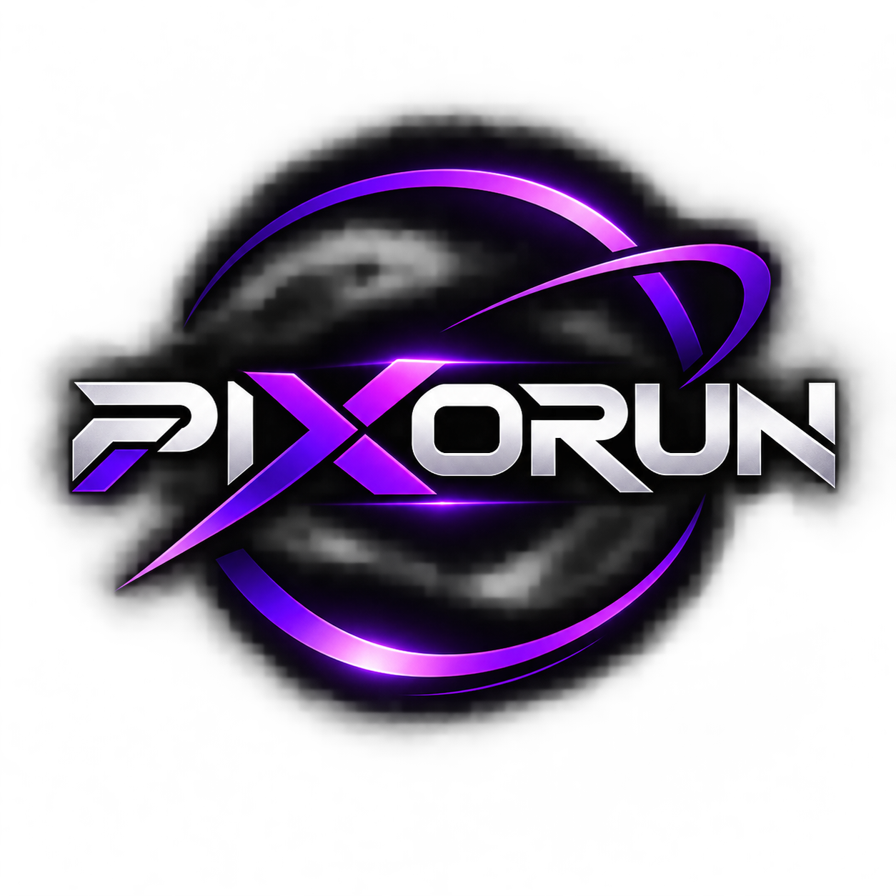

TYPICAL LAUNCH MODEL
TOKEN FIRST. QUESTIONS LATER.
Create a token, publish a link and hope a community forms around it. The launch often comes before people know who is building it.

PIXORUN puts creator credibility and community before the token launch.
Build your presence. Earn trust. Launch with purpose.
Most launchpads focus on the moment a token goes live. PIXORUN is designed to focus on what should happen before that moment.
Create a token, publish a link and hope a community forms around it. The launch often comes before people know who is building it.
Creators build a profile, show meaningful contribution and grow a community presence before bringing a token to the launchpad.
A launch ecosystem shaped around people, contribution and transparent information—not just token creation.
Every creator gets a dedicated profile to present their project, activity and contribution. A wallet address alone should not tell the whole story.
A reputation layer can reflect meaningful work, consistent participation and verified community activity—not empty clicks or vanity numbers.
Creators build real connections and gather early supporters before a token launch. Early members help shape the project through feedback.
Token supply, creator information, launch rules and key project details are presented clearly so users can make informed decisions.
Imagine every creator arriving with a public track record—not just a token ticker. This is the foundation PIXORUN plans to build.
This profile is a concept preview. Reputation scoring, verification and creator records are planned features; they are not live yet. Scores will need clear rules and anti-farming safeguards before launch.
PIXORUN's first product testing phase is designed for Genesis Pass holders.
Genesis Pass holders will be eligible to access the PIXORUN Private Testnet, try early features and help test the system before wider release.
Anyone can explore public information, follow development and learn about the ecosystem. Private Beta tools remain restricted to eligible pass holders.
We will build the foundation first, test it with the community, then expand the launch mechanics.
Profiles, project information and creator presence.
Contribution signals, verification and anti-farming rules.
Genesis Pass holders test early product features.
Feedback, early supporters and transparent project pages.
Test token creation and launch flows on Robinhood Chain Testnet.
Broader access after testing, review and security checks.
Development roadmap only. Access, features and timing may change as testing progresses. Token deployment and trading are not live on this page.